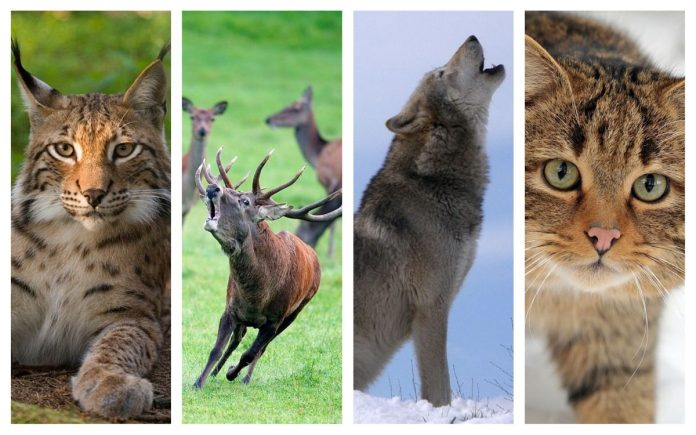

Animale sălbatice din România. Ce specii sunt cele mai numeroase
În România trăiesc sute de mii de animale sălbatice, de la binecunoscutele căprioare – care pot fi întâlnite nu doar la munte, ci și în pădurile din zonele deluroase, premontane sau chiar de la câmpie – până la discreții râși. GreatNews a alcătuit o listă cu informații interesante despre cele mai spectaculoase animale sălbatice din România.
Folosind cele mai recente date referitoare la efectivele fiecărei specii, obținute de la Ministerul Mediului, am aflat care sunt speciile de mamifere cu un număr mare de exemplare, dar și speciile unde numărul exemplarelor este redus.
Bineînțeles, lista nu este exhaustivă, așa că vă invităm să ne povestiți și despre alte animale sălbatice din România care vă fascinează.